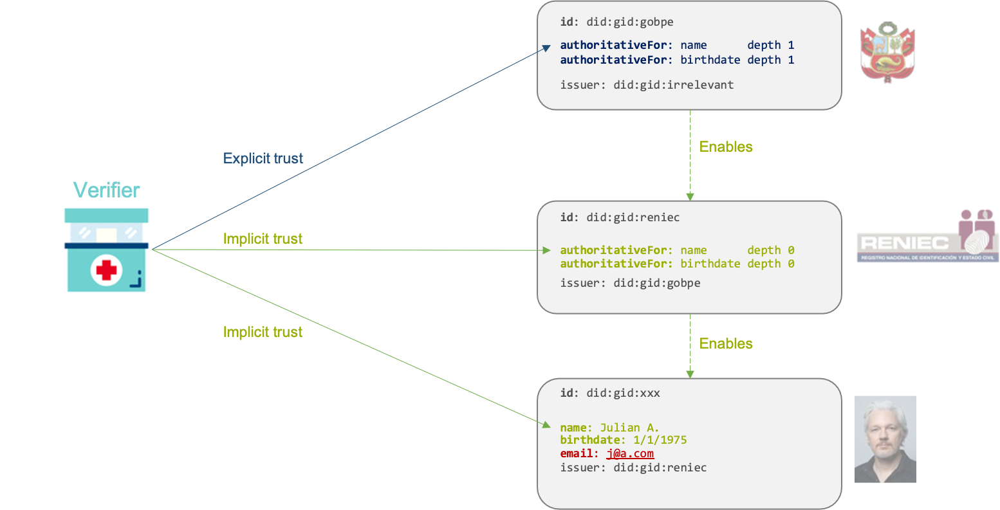

Trusted Credentials
Motivation
Verifiable credentials make claims about a subject. While it is possible for a verifier to deterministically check that a credential actually came from its listed issuer without modifications, the decision of whether that issuer is relevant for the claims is subjective.
For example, a police officer in Germany might verify that a driving license from Canada is genuine, but that doesn't mean they will accept the Canadian government as a relevant authority and let you drive. That decision is up to the police and based e.g. on international agreements between countries.
In some cases, verifiers' criteria are as simple as recognizing a set of authorities for certain types of claims or credentials. In other cases, the decision involves delegation and roots of authority. Such a setup is similar to the Public Key Infrastructure (PKI) for X.509 certificates, but with different chains of trust depending on the type of information – the authorities for academic credentials are not the same as for citizenship or banking information.
Definitions and concepts
Authority
An authority for a type of claim (e.g. identity document number, phone number, email address) is an entity that is trusted by a verifier to issue reliable claims of that type.
Being or not an authority for a given type of claim depends on each verifier: a same entity is an authority to some verifiers but not to others.
Trusted claim
A claim is trusted by a verifier if either:
- The verifier considers the issuer of the containing credential to be an authority for that claim (implicit trust).
- Or the verifier decides to trust the claim directly, based on the verifier's own rules (explicit trust).
Delegation: depths of authority
Some entities, such as governments, have the authority to issue claims themselves but choose to delegate that authority to other entities.
Examples:
- A car reseller may attest to a car's functioning state but may not delegate that authority to another entity (authority with depth 0).
- A car brand may give authority to car resellers to attest to a car's functioning state (depth 1).
- A university may issue diplomas but may not delegate that authority (depth 0).
- The Ministry of Education of a country may give authority to universities to issue diplomas (depth 1).
- The government of a country may give authority to the Ministry of Education to give that authority to universities (depth 2).
Big picture

Technical specification
Schema
The following schema is used by an issuer inside a Verifiable Credential's credentialSubject section to say that the subject is authoritative for a given claim type.
"credentialAuthority": {
"authoritativeFor": "http://schema.org/driverLicense", # The type of claim the entity is authoritative for
"depth": 1 # Number of delegation hops, defaults to 0
}
Trusting claims
A claim can be either implicitly or explicitly trusted. The sections below detail how trust is determined in either case. Implicit trust is defined recursively, with explicit trust being the exit case of the recursivity.
Implicit trust
A claim is implicitly trusted when the issuer of the credential is considered an authority for that claim, i.e. when the verifier trusts (implicitly or explicitly) an authoritativeFor claim about the issuer.
Additionally, when the claim to be trusted has type authoritativeFor itself, the issuer's authoritativeFor claim must have a depth property strictly higher than that of the original claim.
Example:
- Recruiter X receives a credential claiming that John Doe has a Doctorate in Rocket Science (modelled as "diploma").
- That credential is issued by University of the North.
- University of the North, in a separate credential, claims to be an authority for claims of type "diploma" with default depth 0.
- That second credential was issued by Ministry of Education.
- Ministry of Education, in a separate credential, claims to be an authority for "diploma" claims, with depth 1.
- That third credential is signed by Government of Country X.
- Government of Country X, in a separate credential, claims to be authoritative for claim "diploma" with depth 3.
- That third credential is explicitly trusted by the verifier (see below).
- As a result, Recruiter X implicitly trusts John Doe's diploma.
Explicit trust
A claim is explicitly trusted when the verifier makes the decision based on its own (business, regulatory, etc.) rules. This is the simplest case.
Examples:
- An identity wallet may allow the user to manually trust a specific credential.
- A verifier may choose to accept self-issued credentials (i.e. the subject is the issuer) for some claims.
- Big Buck Bank chooses to explicitly trust a specific financial institution as an authority for credit score claims.
- Recruiter X knows the DIDs of recognized universities and decides to trust any diplomas issued by those DIDs, for a specific range of issuance date.
- Ask Y chooses to trust a specific public institution for
authoritativeForclaims and a given depth, making that issuer a "Root authority" in a chain of trust.
Notes
Transitivity of trust delegation: friend of a friend of a friend of...
This specification defines implicit trust in a recursive way, with explicit trust being the exit condition. However, to prevent infinite loops and to avoid ridiculously long trust chains, verifiers may decide to put a practical limit to how many hops they support.
Distribution of authority credentials
This data model relies on the verifier's access to "trust credentials" in addition to the credential of first interest. This is similar to SSL's requirement for the server to distribute the complete chain of trust during handshake. Although this data model doesn't define a way for the holder to distribute the relevant trust credentials, a good practice might be to include all relevant credentials in a Verifiable Presentation. That being said, depending on the context the holder can assume that the verifier already trusts some of the involved authorities and thus avoid "stating the obvious".
Value constraints
This model doesn't place any constraints on the value of the claims. For example, University of the North may not be an authority for Doctorates in Rocket Science but only for Masters in Literature.
However, that limitation shouldn't be a problem thanks to the trust model. If an entity abuses their authority and starts signing certificates that they shouldn't, or otherwise fails to demonstrate that they're following a rigorous issuance process, they will take the risk of losing their status as an authority. Note the similarity with the inclusion of Root CAs by browsers in traditional PKI.
Relation with eIDAS
Verifiable Credentials may contain a levelOfAssurance attribute as part of their metadata (i.e. at the same level as credentialSubject). The value of that property indicates how reliable the claims contained in the credential are.
The authoritativeFor claims discussed in this specification play nicely with a credential's level of assurance, because the level of assurance of such credentials indicates the level of assurance given to that issuer by a higher-level authority.
Example 1: level of assurance for a normal credential
The credential below claims the name of subject did:xxx:abc to be John Doe, with a level of assurance "High" set by issuer did:xxx:def.
{
"@type": "VerifiableCredential",
"credentialSubject": {
"@context": "http://schema.org/",
"@id": "did:xxx:abc",
"name": "John Doe"
},
"levelOfAssurance": "High",
"issuer": "did:xxx:def"
}
Example 2: level of assurance for an authority
The credential below claims that subject did:xxx:def (issuer of the credential above) is an authority for claims of type name, with a level of assurance "High" set by higher-level authority did:xxx:ghi.
{
"@type": "VerifiableCredential",
"credentialSubject": {
"@context": "http://schema.kaytrust.id/",
"@id": "did:xxx:def",
"credentialAuthority": {
"authoritativeFor": "http://schema.org/name"
}
},
"levelOfAssurance": "High",
"issuer": "did:xxx:ghi"
}
If the verifier trusts did:xxx:ghi with that level of assurance, then they will also trust John Doe's credential with the same level of assurance, per eiDAS rules.